In one of my favorite allusions,
Dr. Bill McCarty likens the Java compiler to a "...stern and pedantic
taskmaster..." that "...tolerates absolutely no departure from the
official rules of the Java language."
I really like the image that this conveys. I also like
to think of the Java compiler as a particularly tough Marine
Drill Sergeant.
In one of my favorite allusions,
Dr. Bill McCarty likens the Java compiler to a "...stern and pedantic
taskmaster..." that "...tolerates absolutely no departure from the
official rules of the Java language."
I really like the image that this conveys. I also like
to think of the Java compiler as a particularly tough Marine
Drill Sergeant.
The reason that I like both these images is that they both hint at the reason why the compiler is so strict. It's a good idea to learn to speak and think and write well while you are young and in school; doing so opens up opportunities that aren't available otherwise.
Similarly, it is much less costly for a soldier to learn on the training ground than to learn in the heat of battle. Like the Marine Drill Sergeant, the Java compiler finds your weaknesses early on, and makes you fix them, so an inadvertent error won't lead to disaster later.
When you write Java programs, your programs can contain three different kinds of errors:
- The Java compiler always tells you when you've made a mistake using Java's grammar, even if you don't understand its error messages. The errors that the compiler catches are called syntax errors.
- The Java Virtual Machine can recognize even more errors; even those that leave the compiler blissfully unaware. When it encounters these runtime errors, it stops running your program and prints an error message.
- Even the JVM doesn't recognize every semantic or logical error. (A semantic error means that your program is grammatically correct, but doesn't actually do what you thought; it is an error in meaning, not form.) Some semantic errors show up as an obvious malfunction, while others require careful testing to coax them out of hiding.
In this chapter we'll look at compile-time or syntax errors, and learn some strategies for dealing with them.
Because haven't completed your study of the Java language,
you might find some of the errors mentioned here (such as
using = instead of ==)
confusing; don't worry. What you should take away from
this chapter is a technique for dealing with
compiler errors. Then, go ahead and bookmark this section,
so you can refer to it in the future when the Java
compiler is driving you crazy.
Syntax Errors
Surprisingly, you want your compiler to be as picky as possible, because errors that are discovered when you are developing your program are much easier (and less expensive) to fix, than errors that are discovered when your program has been shipped to customers all over the world.
Let me give you an example. The Visual Basic language,
which is also used as the programming language in Microsoft's
Office products, allows programmers
to create variables by simply using them. This is called
implicit declaration:
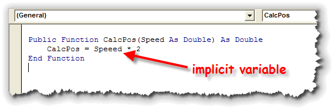
If you use implicit declaration, your Visual Basic compiler will not generate a syntax error when it encounters a new variable it hasn't seen before. Your compiler is much friendlier.
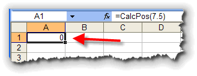
This sounds great, but professional programmers almost always turn this feature off, if possible. Why? Because allowing implicitly declared variables in your program also allows misspelled variable names to slip through, and those errors don't show up until your program runs. Professional programmers quickly learn that it is better to
catch every possible error in your program before you
ship it off into battle, even if that requires a compiler that
seems, well, a little "pedantic":
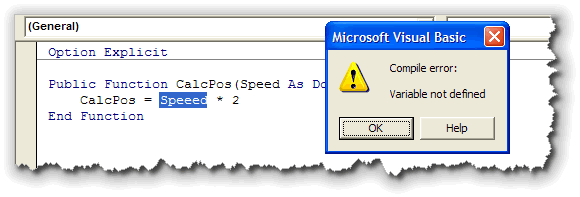
Here's a second example. Adobe's Flash uses a language called ActionScript that is based on JavaScript. The earlier versions of Flash used implicit typing, just like JavaScript. The latest version of ActionScript (AS3), however, should look familiar to those of you who've learned Java. That's right, when you declare a variable, you need to explicitly give it a type.
Errors that the Java compiler is able to find are called compile-time or, more generally, syntax errors. Such errors violate the very strict rules governing Java's formal grammar. Not all errors in your program can be found by the compiler. The most difficult and intractable problems are not errors in expression, but errors in logic. To find and fix those kinds of errors, you'll need to learn about testing your code.
What About Error Messages?
You might think that fixing compiler errors would be simple; after all,
doesn't the compiler tell you exactly what the program is?
Well, let's see. The following program contains several syntax errors. Before you go
any further, why don't you just walk through the listing and see
how many errors you can identify?
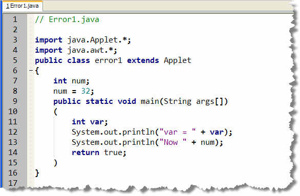
Now open the program (you'll find it in your Chapter04 starter folder) and compile it with DrJava. While most of you have Java 7 or 8, some of you may have the Java 5 JDK installed as well. Others, without a JDK, are using the Eclipse compiler built into DrJava. I'll look at each of those.
Different Compilers
If you compile this program with DrJava set to use
the Java 5 javac compiler from the Java Development
Kit, you will get the two error messages listed here.
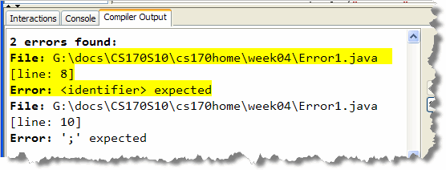
This doesn't mean that the program necessarily has exactly two syntax errors, however. Individual errors will often:- cause "cascading errors" when one error leads to more errors, as subsequent lines are misinterpreted.
- hide errors because the existing error "masks" subsequent lines.
Fixing Errors
Let's try fixing some of the problems. Notice that
the first error says Identifier Expected and
points to line 8 that assigns the value 32 to the
variable num. The message is not
especially helpful, because the statement looks
so simple that it couldn't possibly have an error.
But it does!
Remember that there are two kinds of assignment
statements: initializing assignments, which can
appear anywhere inside your program, and executable
assignments which can only appear inside
a method. Since num obviously is
an identifier, the message would make more sense if
it said something like "invalid executable statement
outside of method", but it doesn't.
We can fix this by combining lines 7 and
8 into a single, initializing assignment, like this:
After this, compile and you'll see you now have only
one error:
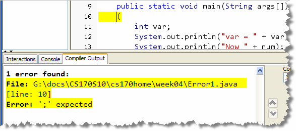
This error seems to say that it is missing a semicolon on line 10. This is a very common error message, and it is usually very accurate. (Usually the missing semicolon is on the previous line, however.) Let's see if that's the case. Just add a semicolon
at the end of the previous line, like this, and
recompile:
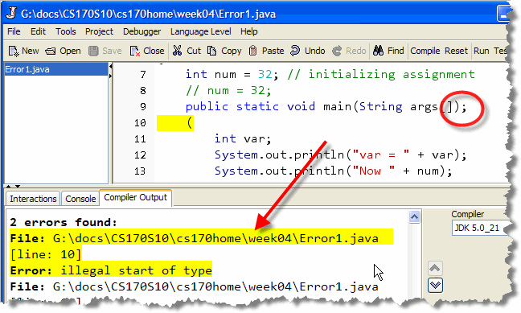
HMMMMM! That doesn't look good!. And it's not. While the error messages may be helpful, they aren't a real map that you can follow. Why? Because ...Not All Error Messages Are Correct!
In the same way that one error can "cascade" and produce other errors, one error can also hide legitimate errors. You may think that your program only has a few errors, but when you fix one of them, all of a sudden, a dozen more appear. That's because with some mistake, the compiler can't understand enough of your code to discover the mistaken statements.
The Java 6, 7 & 8 Compilers
Not all Java compilers will give you the same error
messages. For instance, if we switch DrJava so that
it uses a Java 6, 7 or 8 compiler (I have several
JDKs installed on my computer), you'll see that
the error situation is quite different.
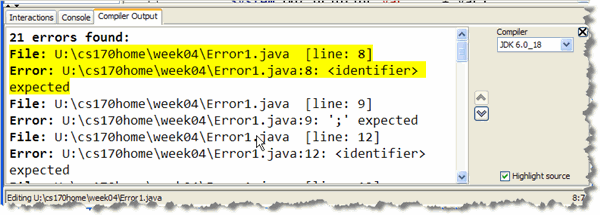
That looks a little better, since apparently the more recent Java compilers can make sense of more of your program than the Java 5 compiler. However, that's not necessarily the case.Look at the second error; it's the same one that the Java 5 compiler flagged, and you already saw that the message wasn't accurate at all. You don't need a semicolon on line 9. That's not the problem.
So, as you can see, you can't simply rely on the compiler telling you exactly what's wrong with your code. Instead, you need to follow a systematic strategy that will help you track down, understand and then squash your syntax errors.
Common Errors
Although there are a wide variety of error messages, compile-time errors really come in four basic categories:
- Structural errors
- "Real" syntax errors
- Typographical errors
- Type errors
Understanding these basic categories, and the different ways to correct and avoid them, will go a long way toward helping you write code that compiles cleanly the first time. Of course, once you've done that, the real error correction is just getting started.
Let's take a look at these four categories.
Structural Errors
 Sometimes, we think of the Java compiler as a machine that
takes source code in one end and spits compiled bytecode
out the other. The problem with this analogy is that it
leads us to think of the compiler like a log chipper
processing our source code in a purely sequential manner.
In fact, that's not what happens at all.
Sometimes, we think of the Java compiler as a machine that
takes source code in one end and spits compiled bytecode
out the other. The problem with this analogy is that it
leads us to think of the compiler like a log chipper
processing our source code in a purely sequential manner.
In fact, that's not what happens at all.
Before the Java compiler can even think about turning your source code into byte-code, it first must read your entire program, and then organize it. This is done in several phases.
The first phase, scanning or lexical analysis,
breaks the entire program up into individual pieces called tokens.
The output of this phase is called a token stream.
This tokenizing phase is almost exclusively dependent upon the
precise matching of pairs of delimiters:
single quotes, double quotes, parentheses, and braces.
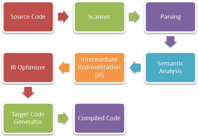
What Does This Mean?
During the scanning phase, the compiler attempts to organize the
program by matching keywords such as class, along
with delimiters. When you fail to get the essential
organization of your program correct, then the compiler
really can't go any further.
The Error1 program doesn't really have only two errors; the remaining errors are hidden by the structural errors. Only after the entire program is organized correctly, can the compiler go through and make sure the right tokens are in the correct order.
How Do You Fix It?
Preventing structural errors is really much easier than correcting them afterwards. Here are three things you can do to prevent them from occurring in the first place:
- Understand what goes where.
Don't just copy code and place code fragments at random in your Java programs. Know where each element belongs. Specifically, make sure you understand that:importandpackagestatements must appear at the beginning of your file.- Field definitions must appear inside a class definition, but outside of any method definition.
- Method definitions must be inside a class definition, but not inside any other method definition.
- Program statements, except for field definitions, must appear inside methods. Program statements must end with semicolons.
- Formal parameter variables go inside the parentheses following a method name, and must include both a type and a name for each parameter variable.
- Braces are used to delimit the body of classes, methods, and selection structures like loops, while parentheses are used to delimit parameter lists and the condition list in control statements. Don't confuse these.
- Write structural elements in one piece.
Beginning programmers often start at the beginning of a structural element—a class or method definition, or a selection or iteration statement—and work through to the bottom. Experienced programmers will put the structure in place first—write the header and add the opening and closing braces—before turning to the body of the class or method. - Indent correctly.
Use a consistent and easily checked indenting style. Your indenting style should allow you to easily tell, at a glance, if all your braces are in the right place. Failing to indent and line up your braces makes your code almost impossible to check.In the DrJava IDE, if your code gets "messed up", you can correct the indentation by selecting all the lines in the file and choosing Indent Lines from the Edit menu. This only works, though, if you've fixed the overall structural problems first.
Hands-On: Error1 Structural Errors
So, let's look at Error1.java and go through
the checklist. When you do, you'll find two structural
errors:
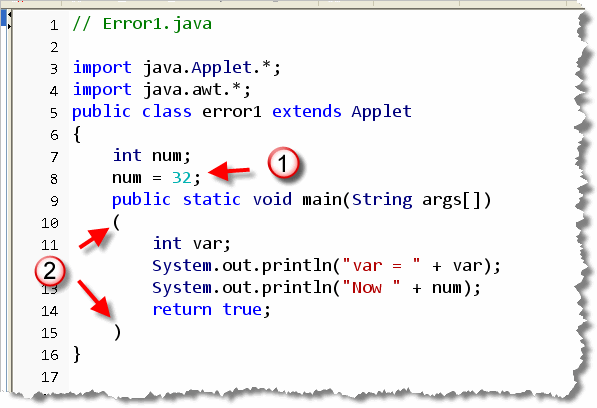
- An executable assignment that belongs in the body of a method (or that can be converted to an initializing assignment as I did earlier.)
- The body of the method is delimited with parentheses instead of braces.
Once you fix these two structural errors, and recompile,
then all of the compilers, which previously reported two errors,
or 21 errors, now show five errors! That's because the other errors
were hidden by the structural errors:
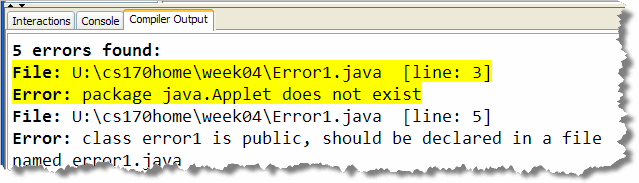
That's also why more modern compilers, which seem to understand more of your code, are really a mixed blessing; they only understand more of your code by "guessing" about what you actually intended to write.If the structure of your program is
incorrect,
NO COMPILER can correctly
understand it.
"Real" Syntax Errors
After the Java compiler has tokenized your code, a second phase of parsing takes place. This is syntax analysis—making sure that the correct kinds of elements (tokens) are in the correct places. The output of the parser phase is an abstract syntax tree. The abstract syntax tree is then double checked for consistency errors, in the phase called semantic analysis. Errors discovered in the parsing or semantic analysis phases are "really" syntax errors.
Here are some examples:
- Using a keyword as an identifier, for instance, results in a syntax
error like this:
- Using a keyword when it is not necessary results in a
syntax error. This is a common example:
- Omitting a required token results in a similar syntax
error, like this:
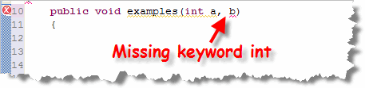
- Using a token in an incorrect context (such as the keyword
void) can also result in a syntax error like this:
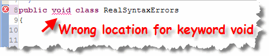
There is no "magic bullet" for detecting and preventing this kind of syntax error. You simply have to learn to put the right keywords and tokens in the correct order.
Hands-On: Error1 Syntax Errors
After fixing the structural errors, you'll see that
there are two "real" syntax errors in Error1.java
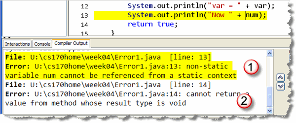
- In the program we are trying to print
the value of the variable
num. However, sincenumwas declared outside the method, we can't access it from astaticmethod likemain().This is a case where the fix of a previous problem, caused a subsequent error. Previously I fixed the executable assignment problem by changing it to an initializing assignment. What I should have done is move both statements into the main method.
- On line 14, the program tries to return
a value, which isn't syntactically correct for a
voidmethod.
After fixing both of these problems, the code looks
like this:
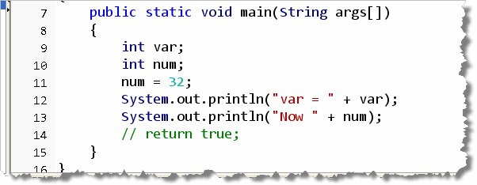
When you recompile, you'll see there are only three errors left, (or are there?)Typographical Errors
Typographical errors are somewhat easier to deal with than structural errors because the Java compiler usually pinpoints them fairly accurately.
Here are the three most common typographical errors you're likely to make:
- Missing semicolon.
Let's face it, semicolons are small, and hard to see. Even worse, the colon, which looks almost exactly like a semicolon, is on the same key and is the character you're likely to insert when you mistype. - Using assignment (
=) instead of equality (==).
Fortunately, Java, unlike C, will usually catch this error. (It won't catch it if the variable you are trying to compare is aboolean, though. When we get to selection statements, I'll show you some techniques for avoiding these kinds of errors.) Still, it's annoying to have to go back and fix it. - Using the wrong case.
Java is a case sensitive language, and that case sensitivity extends to Java filenames, even on operating systems that are not, themselves case sensitive, like Windows and the Mac.
Hands-On: Error1 Typographical Errors
The Error1 program has two obvious "typos": the
name of the file is different than the name of the
class, and the java.applet package in
the import statement got capitalized.
(Remember, packages don't have capitals, classes do!).
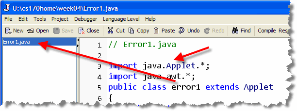
After recompiling, you'll see that one of the three previous errors goes away, because the misspelled package name made the compiler overlook theApplet class.
On the other hand, another error "pops up" when you fix
the two typos. Don't worry, this is common, and you shouldn't
get discouraged. The new error:
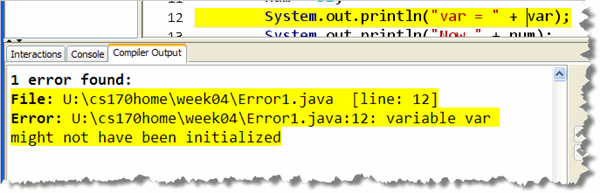
is a "real" syntax error. One of the rules of Java is that all local variable must be initialized before use. In this case, the variable namedvar has not been initialized,
so the code won't compile.
The solution? Give var a value by initializing it when
it is created. Do that, and that "stern and demanding taskmaster",
DrJava will reward you with a "Well Done":
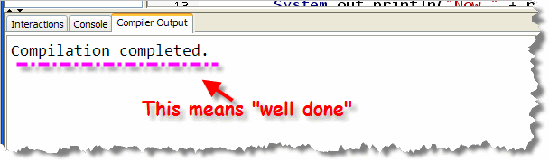
Type Errors
In programming, a variable is a "bucket" in memory
where you store values.
When you ask the compiler to create a variable for you, you tell
it what kind of values you intend to store in your bucket.
This allows Java to prevent you from storing milk or soda in a
cardboard box designed to hold dry cereal, so to speak.
 Java's type system is designed to keep you from losing information,
not to make life difficult for you. Understanding these three
simple rules should help you to go along with the program:
Java's type system is designed to keep you from losing information,
not to make life difficult for you. Understanding these three
simple rules should help you to go along with the program:
- You can store a little value in a big bucket, but not
vice-versa. This means you can store
byte,short,int, andlongvalues in alongvariable, but you cannot store alongvalue in abyte,short, orintvariable. - You can store a less-precise value in a
more-precise bucket, but not vice-versa. This means
you can store
byte,short,int,long, andfloatvalues in adoublevariable, but cannot storedoublevalues in abyte,short,int,long, orfloatvariable; the "bucket" is incapable of retaining the necessary precision. - You can only store similar things in similar buckets. You
can store different numeric values in different kinds of
numeric variables, but you cannot store
booleanvalues or object references in numeric variables.
Finding the Errors
If your program has only a single compile-time error, and, if the error is straightforward, finding and fixing it is usually no problem. What do you do, though, when you get 25 errors, or when the error message produced by Java's compiler doesn't seem to make any sense at all.
When this occurs, you really need to have a systematic strategy for finding and fixing the errors, instead of simply starting at the beginning. Systematically attacking the problem will help you avoid frustration and will help you eliminate syntax errors in record time. This is called the "divide and conquer" approach.
Let's work through and example to see how this works using the DrJava IDE. The following applet generates a dozen (or more) errors, but the strategy you'll learn will help you regardless of the number of errors.
Here's what the program looks like in DrJava:
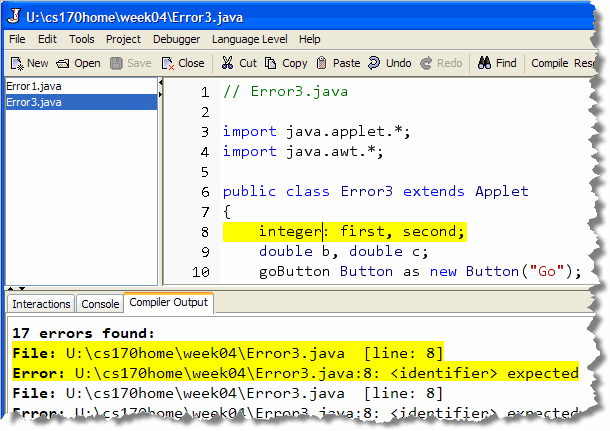
Step 1: Structure First
Begin by "commenting out" the entire body of your applet's class.
This means placing a // at the beginning of every
line inside the class, being careful to
leave the opening and closing braces intact.
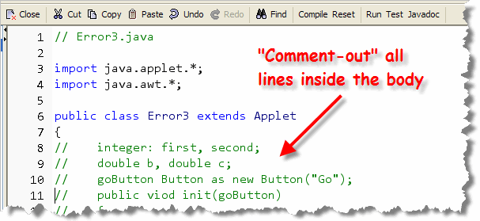
The easiest way to do that in DrJava is to select the lines you want to comment or uncomment, and choose Comment Lines from the Edit menu. When you want to reverse the procedure, select the commented lines and choose Uncomment from the same menu. Even easier is to learn the "hot keys": Control + / to comment-out, and Control + Shift + / to un-comment.
Now when you compile your program you won't see any errors at all. If any errors did appear, you'd know that you had:
- made an error in the basic structure of your class, or...
- made an error in one of your import statements, or...
- made an error in the class header.
By commenting out the body of your class, you've narrowed the number of places where you have to go looking for errors.
Step 2: Reveal the Fields
Once the basic structure of your program compiles cleanly, toggle the comments that are hiding your instance variables or fields. When you do this, you'll see the following errors displayed:
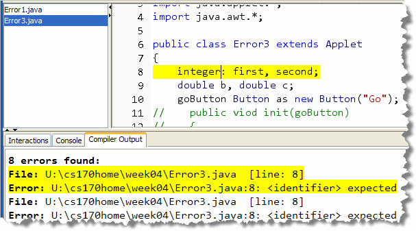
Now you have isolated the errors those that have to do with defining fields or instance variables. That means, once again, you have fewer things to think about. Instead of trying to remember the syntax for a method, you only need to remember how to define an instance variable.This is the principle of "divide and conquer".
For this example, you'd make the following changes:
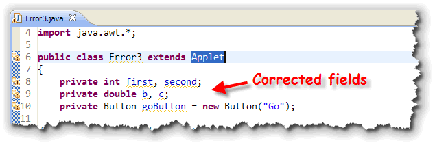
The corrected code changes from the Pascal syntax originally used for the two integer variables, removes the extradouble keyword inserted in the second declaration,
and makes sure that we use Java instead of Visual Basic to
define the applet's button.
Since we haven't covered this part of Java yet, you wouldn't necessarily know how to fix this problem. The point is, though, that you've limited the scope of the problem you're looking at, so you can ask intelligent questions to get it fixed.
Step 3: Method by Method
Continue this divide and conquer approach by "uncommenting" to reveal the first method. Recompile and fix the errors you find. Continue to reveal the rest of the class, method by method, until the entire program compiles without error.

Compiler Errors Summary
- Syntax errors are caught by the Java compiler. Runtime errors are caught by the Java Virtual Machine. Logic errors need to be discovered by testing.
- Compiler error messages are often inaccurate because the compiler may need to "guess" at what you are trying to say. Sometimes, one error will hide different errors. Sometimes, one error will cause a cascade of errors. Learn to use compiler error messages as clues, not as a prescription.
- Structural errors are mistakes in the basic form and placement of your program that prevent the compiler from accurately tokenizing and organizing the program elements. Often these errors are caused by failing to use program delimiters like braces, parentheses and quotes correctly.
- Memorizing the location for each type of element, writing structural elements in one piece, and using a consistent indentation style can help you avoid structural errors in your code.
- "Real" syntax errors mean that you've used the Java "grammar elements", such as keywords, in an incorrect context. The parts themselves may be correct, but they don't make sense. The best defense against real syntax errors is constant practice, until you learn to put the right keywords and tokens in the correct order.
- Typographical errors, or "typos" are common mistakes made when entering a program. Forgetting a semicolon, or mistyping it, using the assignment operator instead of the equality operator, or, most often, simply misspelling a variable or class name, are the most common typos you'll encounter.
- Type errors occur when you attempt to place a value of one type into a variable of a different type, and the two types are incompatible for some reason. The most common reason you'll encounter is when the assignment would result in some data being lost in an arithmetic assignment.
- To systematically discover and fix syntax errors, employ the technique of divide and conquer. Comment out all but a small portion of the code and recompile. When you've fixed the simple errors, uncomment another portion of code. In this way, you only need focus on a small subset of your program at any one time.